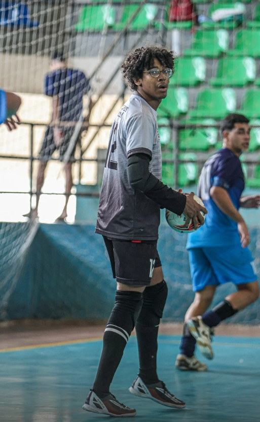

Davi Barbosa
Meu nome é Davi Barbosa e sou estudante. Gosto de tecnologia,
computadores, jogos e de aprender coisas novas. Tenho curiosidade em entender
como as coisas funcionam e gosto de transformar ideias em projetos.
Meu objetivo é continuar estudando e desenvolver conhecimentos principalmente
na área de tecnologia e informática. Acredito que a tecnologia pode
ajudar as pessoas e contribuir para uma sociedade melhor. e acredito que
futuramente posso ser um bom desenvolvedor.
Quero sempre aprender mais, melhorar minhas habilidades e buscar novas
oportunidades. Meu objetivo é evoluir cada vez mais.
O que eu curto fazer
- Programação e desenvolvimento de sites
- musico
- Computadores e tecnologia
- java
Galeria de Fotos


Onde quero chegar
- Informática e Tecnologia
- Programação e Desenvolvimento Web
Saiba mais
Conheça o Instituto Federal Fluminense
Minha página sobre
Por que eu acredito na tecnologia
A tecnologia está presente em praticamente todos os aspectos da nossa vida.
 Aprender sobre computadores, programação e desenvolvimento web pode abrir
muitas oportunidades. Eu acredito que estudar e praticar são formas
importantes de crescer. Quero continuar adquirindo conhecimento, criando
projetos e usando aquilo que aprendo para contribuir com outras pessoas.
Cada novo projeto é uma oportunidade para descobrir algo diferente,
corrigir erros e melhorar minhas habilidades.
Aprender sobre computadores, programação e desenvolvimento web pode abrir
muitas oportunidades. Eu acredito que estudar e praticar são formas
importantes de crescer. Quero continuar adquirindo conhecimento, criando
projetos e usando aquilo que aprendo para contribuir com outras pessoas.
Cada novo projeto é uma oportunidade para descobrir algo diferente,
corrigir erros e melhorar minhas habilidades.